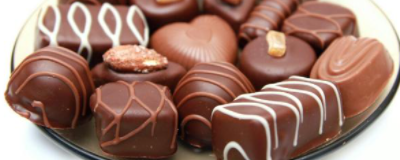
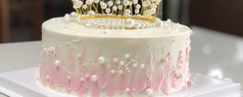

新闻动态


- 
-
小馋猫甜品店——聚焦做甜品，还能走多远？
- 甜品的出现，使大家的生活变得越来越丰富多彩。当消费者们在品尝甜品的时候，就会消除一天的疲劳，增加了生活上的乐趣，因此甜品在市场上的需求越来越大。甜品加盟店的淡旺季是整个行业的淡旺季，不同于旺季不错的营销场面及销售渠道，淡季稍微薄弱，甚至会有一些甜品店会选择在淡季的时候关门歇业，待到旺季开始重新营业。因此投资者要在其他店铺歇业的时候，要抢占市场上的终端资源，这样才能提高甜品加盟店的知名度，从而增加它在我们生活中出现的几率，使甜品加盟店在淡季的时候也能脱颖而出，不会出现甜品加盟店生意萧条的情况。甜品店在淡季的时候虽说开展营销方法的效果可能并不会很好，但却并非不可宣传营销，在淡季的时候还是会有一些适宜的特定的节日，可根据该节日进行策划活动营销促销，这样可以迅速提高甜品加盟店的人气，从而提高甜品加盟店的营业收入。在搞活动的时候，千万不要太千篇一律了，要有自己店铺的特色，这样才能使促销活动更加具有吸引力，刺激更多的顾客进行消费，达到活动营销的目的。
- <阅读全文>
- 
-
小馋猫甜品店——适当营业时间
- 对于小馋猫甜品店的经营来说需要合理安排人力资源，一日三餐是吃饭的高峰期，一般这三个时间段是人特别多的。在此基础上甜品加盟店如何增加客流?首先要对甜品加盟店的经营管理做充分的分析了解，把握好顾客进店消费的时间，这样才能在高峰期时候及时供应出甜品，缩短顾客的等待时间，从而增加甜品加盟店的翻台率，提高甜品加盟店铺的营业收入。以上就是甜品加盟店应对淡季的策略介绍，希望能够帮助到各位投资者们。其实投资者做出相应的变化，才能顺应顾客的需求变化，从而吸引更多顾客们的关注，就不会出现淡季没有生意可做的情况。创业并不是一帆风顺的，投资者一定要良好的忍耐力和坚韧不拔的精神，这样才能尽快实现自己的目标。
- <阅读全文>